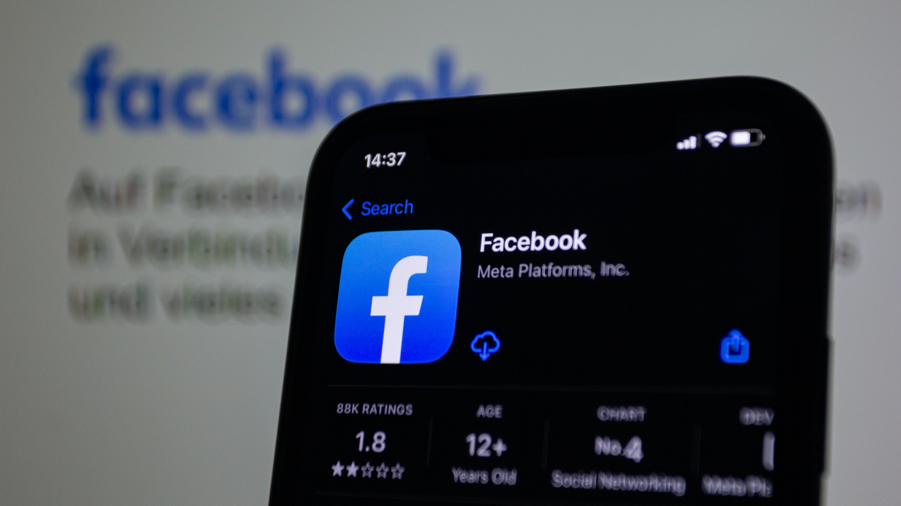

Facebook / Meta plateforms, inc.
- HeadQuarters : Menlo park, California
- Founded : 19 year ago in Cambridge, Massachusetts, U.S. (2004)
- Founders : Mark Zuckerberg, Eduardo Saverin, Andrew McCollum, Dustin Moskovitz, Chris Hughes
- Area served : Worldwide
- Revenue : US$116.61 billion (2022)
- Number of employees : 71,469 (June 2023)
- Website : meta.com
Facebook is a social networking website that was founded in February 2004 by Harvard University students Chris Hughes, Andrew McCollum, Dustin Moskovitz, Eduardo Saverin and Mark Zuckerberg.
The idea behind Facebook was to provide an online book of faces for university students to connect and share information. It was initially a social network for Harvard and expanded in the following years to any university. It eventually became a social network for anyone, anywhere in the world.
The concept of a social network was a nascent one in 2004 and not entirely unique. Other social networks that were active at the time Facebook was created were Friendster, which was launched in 2002, and MySpace, which was launched in 2003. Users post information, status updates and pictures of themselves on social networks. These items are shared with friends, family and communities of interest.
Facebook is more than just a social networking platform; it's also a business. Facebook had its initial public offering on May 18, 2012, on the Nasdaq stock exchange trading under the symbol FB. The company rebranded as Meta on Oct. 28, 2021. As of Dec. 1, 2021, Facebook trades under the symbol MVRS.
Facebook is only one of several technologies that Meta operates. In 2012, Facebook acquired social networking site Instagram for $1 billion. Facebook then acquired WhatsApp for $19 billion in 2014. Facebook later got into virtual reality (VR) hardware with its acquisition of Oculus VR in 2014 for $2 billion. With Meta, the idea is to create and enable the metaverse. This would meld social networking, VR and augmented reality components to create new types of user interactions and experiences.
Key Facebook features
Facebook started out as a community where users shared information about themselves and different topics. Over time, different features expanded the scope of its capabilities:
- Timeline : User profiles and updates are shown on what it known as the Timeline. Timeline is the successor to the Facebook wall, which was the original home for user profiles and updates. The user timeline includes posts, status updates, friend listings, photos, videos and user activity information.
- Friends : A primary feature of Facebook is the ability to search for and connect with friends and family. The search interface helps users quickly find acquaintances and also suggests potential connections.
- News Feed : News Feed enables users to view news from the connections and groups that they follow. Users can like a given post or comment on it.
- Pages : Pages are the profile and content pages for businesses on Facebook. Pages provide the ability for businesses to share information and communicate with customers.
- Games : Facebook provides an integrated capability enabling users to play games on their own or together with friends. Among the early successes of games on Facebook was Zynga's FarmVille.
- Groups : Communities of interest can organize themselves with the Facebook group feature. This enables the sharing of information, images and active discussions.
- Events : This feature enables users and groups to organize events that their followers can attend. It enables users to send out invites and help manage an attendee list.
- Marketplace : This is an online yard sale, where users can buy and sell goods and services with other Facebook members.
- Messenger : This is an instant messenger that enables friends to communicate in real time via webchat or a mobile app.
- Video : Facebook Live is a feature that enables individuals and businesses to stream live video to friends, family and followers.
Facts about facebook
- 1. Facebook has a Massive User Base. ...
- 2. Facebook's Demographics are Wide Ranging. ...
- 3. Facebook is a Global Platform. ...
- 4. Facebook is Available in Many Languages. ...
- 5. Facebook is Great for Brand Awareness. ...
- 6. Facebook is Constantly Growing. ...
- 7. Ideal Times to Make Posts. ...
- 8. Utilizing Video Posts is Important.